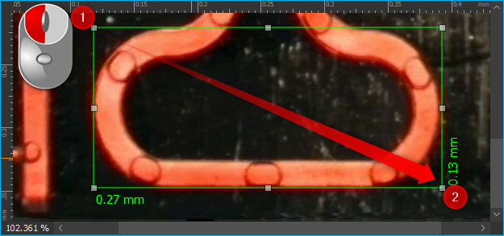

16. Image Analysis Plugin
16.1. Introduction
This plug-in allows you to view, edit, and save images using the most common image file formats (PNG, JPG). In addition you can use it to:
zoom in and out of images,
easily navigate within an image,
measure the dimensions of details of an image.

You can show the Image Analysis View via the main menu iteme . The user interface of the Image Analysis View consists of two main elements: the Toolbar ❶ and the Image Viewer ❷.
16.2. Toolbar
Open image file. |
|
|
Save current image. |
Adjust display size of image to completely fill image viewer area. |
|
|
Resize image to match original pixel size. |
|
Zoom in to image. |
|
Zoom out of image. |
|
Pan tool to move the currently displayed image section. |
|
Draw rectangular measuring box. |
Remove all measurement overlays. |


Tip
You can also open image files easily via drag & drop. Simply drag an image file from your file system over the image analysis workbench and drop it there.
16.3. Image Viewer
16.3.1. Overview
The image viewer contains the following elements:

Tabbed list of available images.
Ruler with customizable dimensions.
Display area.
Zoom level status bar.
Scroll bars.
A new tab displaying the file name will be added for each opened image, e.g., when you open an image file or take a screen shot using the camera. The active tab is highlighted. To close a tab, left-click on the cross icon that is displayed on the right hand side of every tab (see figure below).

To easily access the most frequently used functions, use the mouse and right-click within the image viewing area. This will open a context menu with most of the same buttons that are shown in the toolbar.

16.3.2. Select Scale Unit
You can select between different scale units for the ruler to measure objects displayed in the image viewer window. To change the scale unit right-click anywhere within the ruler. This will open a context menu with the list of available scale units (see figure below).

16.3.3. Select Zoom Level
Use the Zoom In or Zoom Out buttons in the toolbar to adjust the zoom level. Alternatively, simply place the cursor into the image viewer area and use the mouse wheel to re-scale the panoramic image.
|
|
Increase zoom level. |
|
|
Decrease zoom level. |


16.4. Image Navigation
16.4.2. Navigation via the Pan Tool

Activate the Pan Tool in the tool bar to move the displayed image section manually. Click-and-drag into the image viewer to move the image in the viewing area.
16.4.3. Navigation via Mouse
You may also use the mouse to interact with the panoramic view of an image:
Middle-click into the image.

This will activate a navigation cross, which indicates that mouse panning is activated.
By moving the cursor away from the navigation cross, the image will move into the same relative direction. The speed of the movement depends on the distance between the cross and the cursor – the greater the distance, the faster the adjustment.

Mouse panning can be deactivated by another middle-click or a left-click into the image.
16.4.4. Navigation via the Space Mouse
When the Space Mouse is installed, loading the relevant plug-in allows for yet another way for image manipulation.

The SpaceMouse is an intuitive input device which allows you to control all axes (rotation, radius and vertical axis) simultaneously. To use the SpaceMouse, connect it to an available USB port on your PC. Latest drivers can be found on our internet page:
http://www.cetoni.de/englisch/service/downloads_software.html
or on disk (CD or USB stick) you received when you purchased the software. Install the driver to use the SpaceMouse. Position the SpaceMouse device, so that the cable leads away from you and that the 3D Connexion label is readable from your position.
To adjust the digital zoom of the currently active image, press down or pull up the navigation knob of the Space Mouse (figure below).
To adjust the section of the image displayed in the image viewing area, pivot the navigation knob of the Space Mouse into the desired direction.

The speed with which the adjustment is carried out can be regulated by adjusting the degree of pivoting – the stronger the navigation knob is pushed or pulled, the faster the image will move.
|
Move image section left & right. |
|
Move image section up & down. |
|
Zoom in/out. |


{kind=link}
{kind=link}
{kind=link}
16.5. Measurement of Objects
16.5.1. Draw a Measuring Box
Tip
Before drawing a measuring box, select the desired scale unit.
You can draw and adjust a measuring box using the following steps:
Click the toolbar button Measure Rectangle to activate the measuring box tool.

Left-click into the image viewing area to define the upper left-hand corner of the measuring box ❶.
While holding the left mouse button, drag the cursor to size the box as required ❷.
16.5.2. Moving the Measuring Box
To move an entire box to a new location within the viewing area, first place the cursor within the box so that it changes into a crossed arrow ❶. Left-klick to drag the measuring box to its new position ❷.

16.5.3. Adjusting the Size of a Measuring Box

To change the size of a measuring box, move the cursor to one of the 8 square drag handles at the corners or the sides of the box (figure below). The cursor will change to a double-sided arrow ❶, which indicates that you can now resizing the box by dragging the respective mark to a new position.
16.5.4. Deleting a Measuring Box
You can delete individual measuring boxes. First click into the respective box to activate it – the activated box can be identified by the presence of the check marks. Press the Delete button of your keyboard to remove the box.
Delete all measuring boxes within an image by clicking the button Delete measuring lines button in the toolbar or via the context menu.